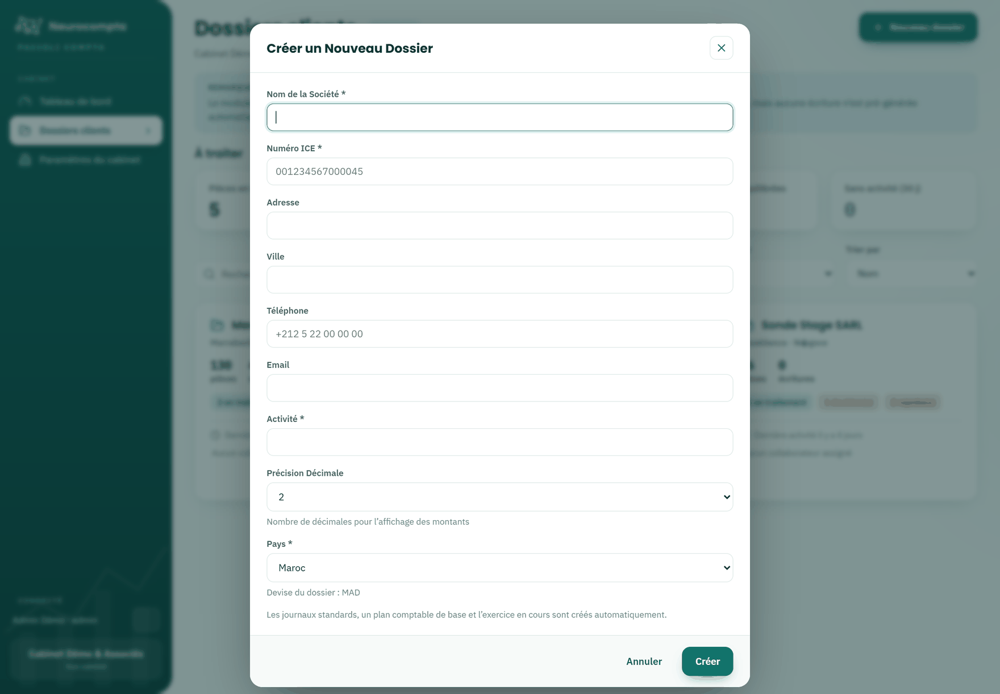
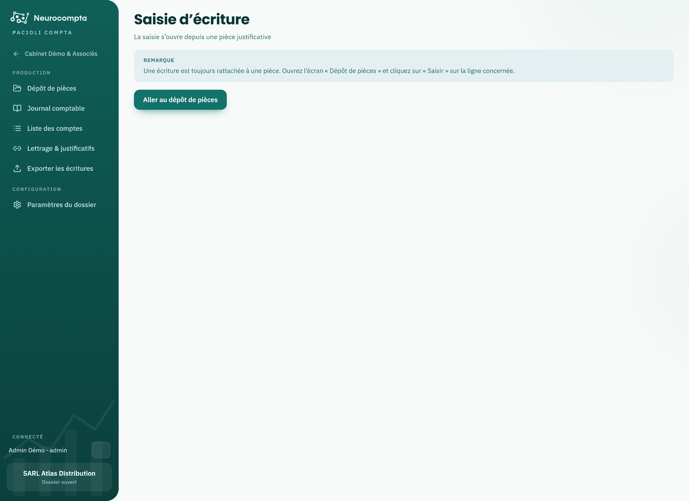
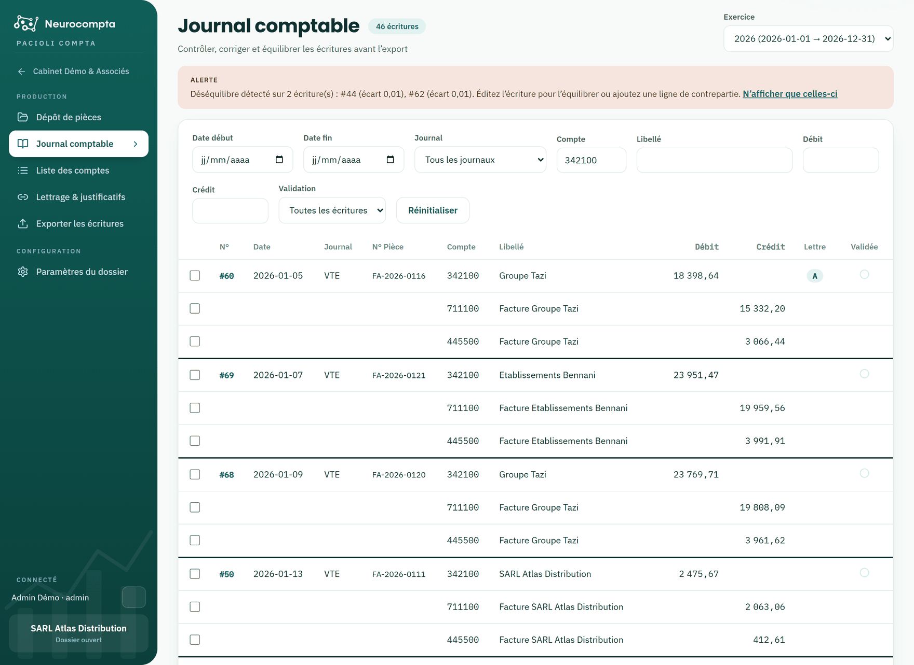
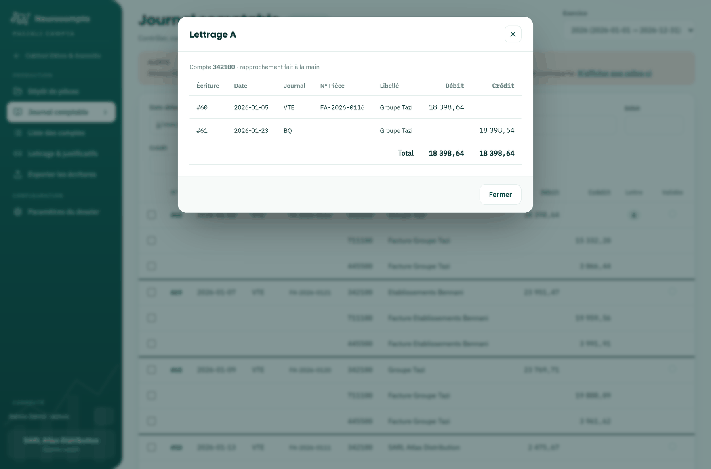
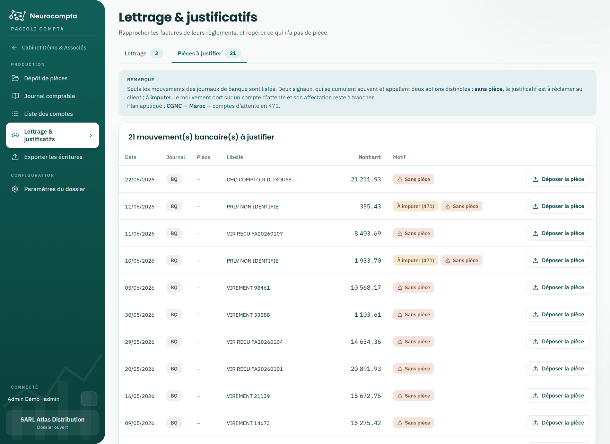
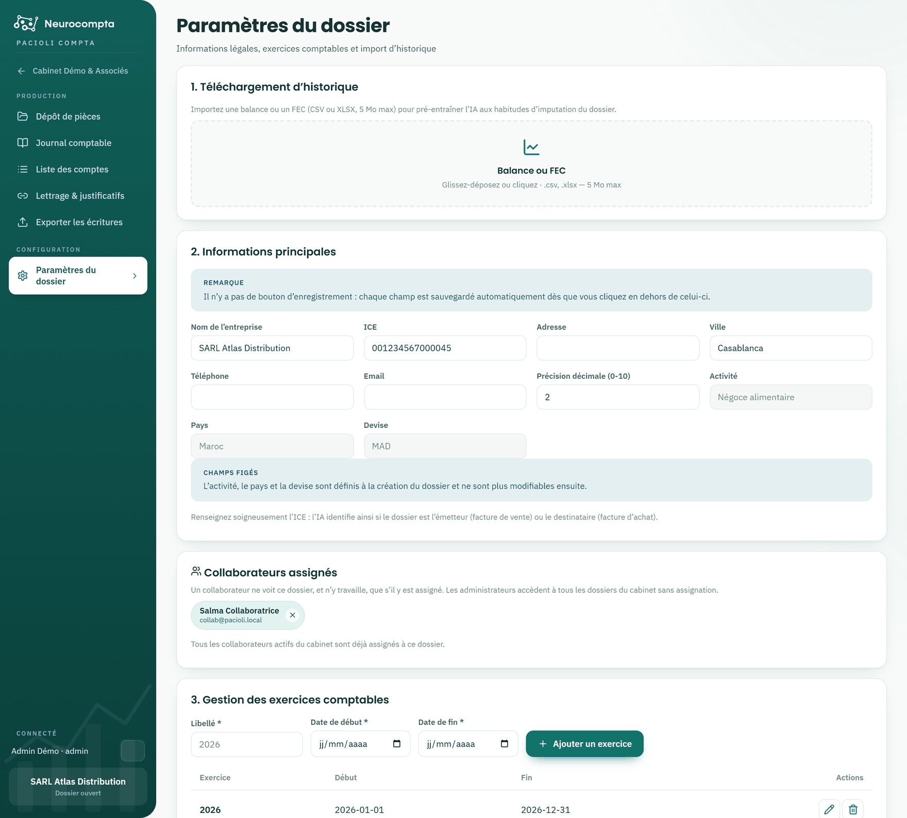
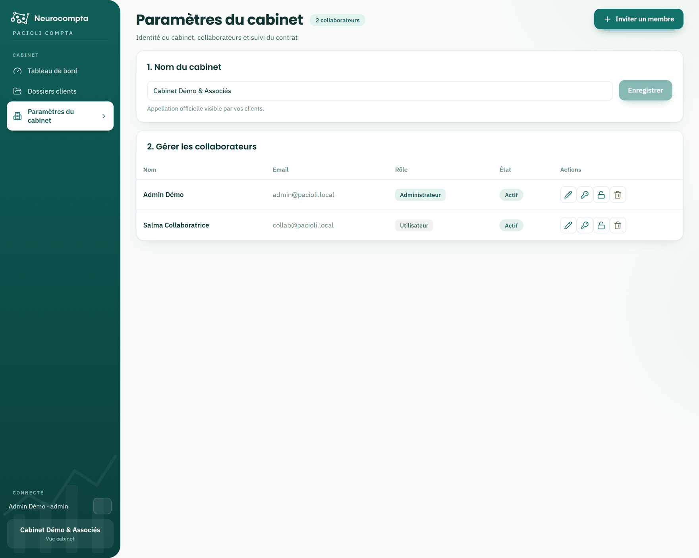

Tout pour prendre en main votre espace de saisie comptable : dossiers clients, dépôt de pièces, journal, lettrage et export des écritures.
DossiersDépôt de piècesJournalLettrageExport
1. Bien démarrer avec Pacioli
Pacioli automatise la saisie comptable : vous déposez vos factures et vos relevés, l'analyse en extrait les montants et prépare les écritures. Vous vérifiez, corrigez si besoin, puis exportez.
L'application s'organise sur deux niveaux. Le niveau cabinet donne la vue d'ensemble et la liste de vos dossiers. Une fois un dossier ouvert, le menu de gauche bascule sur les fonctions comptables de ce dossier.
La liste des dossiers clients, point de départ du travail quotidien
Deux profils
Administrateur : voit tous les dossiers du cabinet, gère les collaborateurs et le contrat. À la connexion, il arrive sur le tableau de bord.
Utilisateur : ne voit que les dossiers auxquels il est assigné. À la connexion, il arrive directement sur ses dossiers clients.
Accès aux dossiers
Un collaborateur ne voit un dossier, et ne peut y travailler, que s'il y est assigné. L'assignation est faite par un administrateur depuis les paramètres du dossier.
Le collaborateur qui crée un dossier y est assigné automatiquement.
Un administrateur accède à tous les dossiers sans avoir besoin d'y être assigné.
Les noms des collaborateurs assignés apparaissent en pied de chaque carte de dossier.
Se déplacer dans l'application
Ouvrez un dossier depuis la liste : le menu affiche Dépôt de pièces, Journal comptable, Liste des comptes, Lettrage & justificatifs, Export et Paramètres du dossier.
Le lien en haut du menu, portant le nom de votre cabinet, referme le dossier et vous ramène à la vue d'ensemble.
Le pied du menu rappelle en permanence qui est connecté et quel dossier est ouvert.
Astuce — Si une entrée de menu ne s'affiche pas, vérifiez d'abord votre niveau : certaines fonctions n'existent qu'au niveau cabinet, d'autres seulement dans un dossier ouvert.
2. Suivre votre consommation
Le tableau de bord est le premier écran de l'administrateur. Il répond à une question : votre contrat tiendra-t-il jusqu'à l'échéance au rythme actuel ?
Deux enveloppes sont suivies séparément : le traitement des pièces et les pages de relevés bancaires. Les doublons écartés ne sont jamais décomptés.
Enveloppes du contrat, activité mensuelle et répartition par dossier
Lire une enveloppe
Chaque carte affiche le consommé, le restant et le rythme quotidien. Le trait vertical sur la jauge marque le repère de rythme : c'est là que votre consommation devrait se situer aujourd'hui, compte tenu du chemin déjà parcouru dans le contrat.
La jauge en deçà du repère : vous consommez moins vite que la durée ne s'écoule.
La jauge au-delà du repère : vous consommez plus vite, sans que l'enveloppe soit nécessairement menacée.
La barre en haut de page rappelle les jours écoulés et restants de la période contractuelle.
Alertes de seuil
À 80 % de consommation, un message ambre invite à anticiper le renouvellement.
À 90 %, le message passe au rouge : le dépôt se bloquera pour tous les dossiers une fois l'enveloppe vide.
Les deux messages portent l'adresse du service commercial.
Activité et répartition
L'activité mensuelle montre le volume déposé mois par mois sur la période contractuelle ; survolez une colonne pour le détail.
La consommation par dossier indique qui consomme l'enveloppe du cabinet — utile pour refacturer ou arbitrer.
Bon à savoir — Cet écran est réservé aux administrateurs : il porte sur le contrat du cabinet, pas sur un dossier. Un profil Utilisateur arrive directement sur ses dossiers clients.
3. Gérer vos dossiers clients
L'écran Dossiers clients rassemble les dossiers auxquels vous avez accès. Un bandeau « À traiter » remonte en tête ce qui bloque : pièces en traitement, doublons à arbitrer, pièces rejetées, écritures déséquilibrées et dossiers sans activité depuis trente jours.
Le bandeau « À traiter », la recherche et les cartes de dossiers
Retrouver un dossier
La recherche porte sur le nom, la ville et l'activité.
Le filtre Collaborateur ne propose que les personnes réellement assignées ; l'option « Non assignés » révèle les dossiers que personne ne suit.
Le tri s'effectue par nom, par activité la plus récente ou par volume de pièces.
Lire une carte
Les badges colorés ouvrent directement l'écran déjà filtré : doublons, pièces rejetées, écritures déséquilibrées.
Le pied de carte affiche la date de dernière activité, puis les collaborateurs assignés.
Créer un dossier
Le bouton « Nouveau dossier » ouvre le formulaire de création. Le nom, l'ICE, l'activité et le pays sont obligatoires ; l'e-mail est facultatif.

Le formulaire de création d'un dossier client
La devise est proposée automatiquement d'après le pays choisi.
Le pays détermine aussi le plan comptable du dossier et son plan de comptes de départ.
Vous êtes assigné automatiquement au dossier que vous créez.
Bon à savoir — L'activité, le pays et la devise ne sont plus modifiables après la création : ils structurent le dossier. Vérifiez-les avant de valider.
4. Déposer des pièces
Le dépôt de pièces est le point d'entrée de la production comptable. Vous déposez vos documents par catégorie ; l'analyse en extrait les données et prépare les écritures.
Les zones de dépôt et le tableau des pièces déjà transmises
Déposer un document
Cliquez sur la zone correspondant au type : facture d'achat, facture de vente ou relevé bancaire.
Choisissez un ou plusieurs fichiers. Formats acceptés : PDF, PNG, JPG. Taille maximale : 5 Mo par fichier.
La pièce apparaît aussitôt dans le tableau, avec son statut de traitement.
Suivre le traitement
Téléchargé : la pièce est reçue, l'analyse n'a pas commencé.
En traitement : l'analyse est en cours.
Traité : les écritures sont disponibles dans le journal.
Rejeté : l'analyse n'a pas abouti ; le motif est affiché en clair.
Dupliqué : une pièce identique existe déjà dans le dossier.
Arbitrer un doublon
Les doublons sont détectés sur le contenu du fichier, et non sur son nom : le même document redéposé sous un autre nom est reconnu. Une pièce en doublon n'est pas décomptée de votre enveloppe et ne produit pas d'écriture.
Le bouton de comparaison affiche les deux fichiers côte à côte, au format A4.
Si les documents sont bien identiques, supprimez le doublon.
S'il s'agit de deux pièces différentes, forcez le traitement depuis l'écran de comparaison.
Bon à savoir — Supprimer une pièce supprime aussi les écritures qui en découlent. Si certaines sont validées, une confirmation supplémentaire vous est demandée.
Astuce — Cochez plusieurs lignes : une barre d'actions apparaît en bas de l'écran pour télécharger les fichiers d'origine ou supprimer la sélection.
5. Saisir ou corriger une écriture
La saisie manuelle sert à créer l'écriture d'une pièce que l'analyse n'a pas traitée, ou à corriger une écriture pré-générée. L'aperçu de la pièce reste affiché à côté du formulaire : vous saisissez en regardant le document.
Cet écran s'ouvre depuis le dépôt de pièces, par le bouton « Saisir », ou depuis le journal en cliquant sur le numéro d'une écriture. Il n'occupe pas d'entrée de menu.

Le formulaire de saisie, avec l'aperçu de la pièce justificative
Renseigner l'écriture
Renseignez l'en-tête : date, journal, référence de la pièce et libellé.
Ajoutez les lignes : un compte, un libellé, puis un débit ou un crédit — jamais les deux sur la même ligne.
Le champ Compte se recherche au clavier, par numéro ou par intitulé. Si le compte n'existe pas encore, créez-le depuis la liste déroulante, sans quitter l'écran.
Vérifiez l'équilibre : les totaux débit et crédit s'affichent en bas du formulaire. L'enregistrement est refusé tant qu'ils diffèrent.
Enregistrer ou valider
Enregistrer conserve l'écriture en l'état ; elle reste modifiable.
Valider enregistre puis fige l'écriture, et ouvre directement la pièce suivante.
Les flèches « Pièce n / total » permettent d'enchaîner les pièces sans repasser par le journal.
Bon à savoir — Une écriture validée est figée : elle n'est plus modifiable tant que vous ne l'avez pas dévalidée. C'est ce qui garantit la fiabilité de l'export.
Astuce — Une écriture est toujours rattachée à une pièce justificative. Pour saisir une opération diverse, déposez d'abord le document correspondant.
6. Consulter le journal comptable
Le journal rassemble toutes les écritures du dossier, quelle que soit leur origine. C'est l'écran de contrôle avant l'export.

Le journal, ses filtres et le détail des lignes
Filtrer
Par exercice, par période, par journal, par compte ou par libellé.
Par montant, au débit ou au crédit.
Par état de validation, pour isoler ce qui reste à valider.
Ouvrir une écriture
Cliquez sur le numéro d'une écriture pour l'ouvrir en saisie. Vos filtres sont conservés : en revenant au journal, vous retrouvez exactement la liste que vous aviez.
Repérer les lignes lettrées
La colonne Lettre affiche le code de lettrage des lignes rapprochées. Un clic sur la lettre ouvre le détail : toutes les lignes que ce lettrage réunit, souvent réparties sur plusieurs écritures et plusieurs journaux.

Le détail d’un lettrage, ouvert en cliquant sur sa lettre
La fenêtre rappelle la méthode du rapprochement en clair : référence citée, montant et libellés concordants, ou fait à la main.
Le total débit et crédit permet de vérifier d’un coup d’œil que le groupe s’annule.
Une colonne Lettre vide signifie que la ligne reste à lettrer.
Certaines lettres apparaissent sans que vous ayez rien fait : les rapprochements prouvés par la référence de la pièce sont appliqués à l'arrivée de l'écriture. Le détail le précise, et le clic les défait.
Valider
La validation se fait écriture par écriture, ou sur une sélection.
Une écriture déséquilibrée ne peut pas être validée. Elle reste visible : elle doit être corrigée, pas dissimulée.
La date de validation alimente le champ correspondant du fichier FEC.
Dévalider une écriture demande une confirmation, pour éviter le geste réflexe.
Astuce — Depuis l'écran des dossiers, le badge « écritures déséquilibrées » ouvre le journal déjà filtré sur les écritures concernées.
7. Gérer la liste des comptes
Chaque dossier dispose de son propre plan de comptes. Il est créé à l'ouverture du dossier avec une amorce adaptée au pays choisi, puis complété au fil de la production.
Le plan comptable du dossier
Ce que vous pouvez faire
Rechercher un compte par numéro ou par intitulé.
Créer un compte, ou modifier l'intitulé d'un compte existant.
Supprimer un compte qui n'est mouvementé par aucune écriture.
Une amorce selon le pays
Un dossier marocain démarre sur le plan CGNC, un dossier français sur le PCG, un dossier de la zone OHADA sur le SYSCOHADA. Ces amorces couvrent l'essentiel — tiers, TVA, banque, caisse, achats, ventes — et sont faites pour être complétées.
Astuce — Les comptes utilisés par l'analyse sont ajoutés automatiquement : la liste s'enrichit sans intervention. Vous pouvez aussi créer un compte sans quitter la saisie d'écriture.
8. Lettrer et justifier
Le lettrage consiste à faire s'annuler les lignes d'un compte de tiers : une facture avec son règlement. L'écran vous propose les rapprochements, avec leur motif en clair — un rapprochement qu'on ne sait pas expliquer n'a pas sa place dans un dossier.
Les comptes de tiers et les rapprochements proposés, avec leur score et leur motif
Ce qui se fait sans vous
Quand le numéro d'une facture figure dans le libellé du règlement, pour un montant identique au centime, le rapprochement est appliqué dès l'arrivée de l'écriture — qu'elle vienne de l'analyse d'une pièce ou de votre saisie. C'est la seule règle qui apporte une preuve ; les autres attendent votre accord.
Peu importe l'ordre : facture puis règlement, ou l'inverse. Dès que la paire est complète, elle se lettre.
Ces lettrages portent la mention « appliqué automatiquement » dans le détail, au journal.
Vous gardez la main : un clic sur la lettre le défait.
Lire une proposition
Pour tout le reste, l'outil propose. Chaque proposition affiche les lignes qu'elle rapproche — date, journal, référence, tiers et montants — avec le score et la règle qui l'a produite. Vous jugez sur pièce, sans quitter l'écran.
Référence citée : la preuve la plus directe — déjà appliquée, vous la retrouvez lettrée.
Montant et tiers : montant identique, et libellés désignant visiblement le même tiers.
Montant et date : montant identique et dates proches, mais aucun libellé ne confirme le tiers. Jamais appliqué automatiquement.
Règlement groupé : un versement solde plusieurs factures à la fois.
Deux groupes, deux gestes
Rapprochements sûrs : le lettrage automatique les applique d'un coup.
À vérifier : le montant concorde mais rien ne confirme le tiers. Relisez avant d'appliquer.
Quand plusieurs lignes se disputent le même montant sans autre indice, rien n'est proposé : le choix serait arbitraire, il vous revient.
Appliquer les rapprochements
Appliquer valide une proposition et lui attribue une lettre.
Lettrage automatique applique d'un coup tous les rapprochements sûrs, sur le compte ouvert ou sur tous. Les moins certains restent proposés, à valider à la main.
Pour lettrer vous-même, cochez des lignes : l'écart s'affiche en direct et le bouton ne s'active que si le groupe s'annule.
La lettre affichée sur une ligne est cliquable : elle défait le lettrage, après confirmation.
Pièces à justifier
Le second onglet liste les mouvements des journaux de banque qui posent problème. Deux signaux, qui se cumulent souvent et appellent deux actions distinctes.

Les mouvements bancaires sans justificatif ou restés à imputer
Sans pièce : aucun justificatif n'est rattaché. Il est à réclamer au client.
À imputer : le mouvement dort sur un compte d'attente, son affectation reste à trancher.
Le bouton « Déposer la pièce » transmet le justificatif directement depuis la ligne concernée.
Un filtre par mois permet de traiter période par période ; seuls les mois comportant des mouvements sont proposés.
Après le dépôt d'un justificatif
Le mouvement quitte immédiatement la liste des pièces manquantes.
Dès que l'analyse produit l'écriture de la pièce, celle-ci est lettrée automatiquement avec le mouvement bancaire.
Si les montants ne s'annulent pas — règlement partiel, écart de change — rien n'est forcé : le lettrage reste à faire à la main.
Retrouver un lettrage depuis le journal
Une fois appliqué, le lettrage se consulte aussi depuis le journal comptable : la colonne Lettre y affiche le code, et un clic dessus rouvre le détail du rapprochement.
Bon à savoir — Les comptes lettrables dépendent du plan comptable du dossier, donc de son pays. Le plan appliqué est rappelé en haut de chaque onglet.
Astuce — Un lettrage doit toujours être de solde nul. Si le groupe ne s'annule pas, c'est qu'il reste quelque chose à régler : ne forcez pas, cherchez la ligne manquante.
9. Exporter les écritures
L'export produit le fichier des écritures du dossier, dans le format attendu par votre logiciel de production. Par défaut, seules les écritures validées sont exportées : c'est ce qu'attend un fichier des écritures comptables.
La prévisualisation avant export, et les deux formats disponibles
Choisir ce que vous exportez
Filtrez par exercice, par période ou par journal.
La prévisualisation affiche les écritures retenues et leur nombre de lignes avant tout téléchargement.
Deux formats
FEC (.txt) : le fichier des écritures comptables, avec ses dix-huit champs réglementaires.
Excel (.xlsx) : le même contenu en tableau, pour relecture ou retraitement.
Astuce — Si le nombre de lignes vous paraît faible, vérifiez l'état de validation dans le journal : les écritures non validées sont exclues par défaut.
10. Paramétrer un dossier client
Les paramètres du dossier regroupent son identité, ses exercices comptables et les collaborateurs qui y ont accès. Les champs d'identité s'enregistrent à la sortie de chaque champ : il n'y a pas de bouton à actionner.

Informations du dossier, collaborateurs assignés et exercices comptables
Informations principales
Modifiables à tout moment : nom, ICE, adresse, ville, téléphone, e-mail, précision décimale.
Figés depuis la création : activité, pays et devise. Ils structurent le dossier et son plan comptable.
Collaborateurs assignés
Réservé aux administrateurs. Un collaborateur ne voit ce dossier, et n'y travaille, que s'il y figure.
La liste déroulante propose les collaborateurs actifs du cabinet non encore assignés.
La croix sur une pastille retire l'accès, après confirmation.
Les administrateurs ne sont pas proposés : ils accèdent déjà à tous les dossiers.
Exercices et historique
Créez, modifiez ou supprimez les exercices du dossier. Les périodes ne peuvent pas se chevaucher.
L'historique d'écritures (balance ou FEC) sert de référence pour retrouver les bons comptes d'imputation, et évite d'avoir à paramétrer le dossier en détail.
Bon à savoir — Un dossier sans aucun collaborateur assigné reste visible des seuls administrateurs. La mention apparaît en clair sur la carte du dossier.
11. Paramétrer le cabinet
Cet écran est réservé aux administrateurs. Il porte sur le cabinet lui-même : son nom et les personnes qui y travaillent. Un profil Utilisateur ne voit pas cette entrée de menu et ne peut pas y accéder.

Le nom du cabinet et la liste des collaborateurs
Gérer les collaborateurs
Ajouter : renseignez le nom, l'e-mail et le rôle.
Le crayon modifie la fiche ; la clé réinitialise le mot de passe.
Le cadenas désactive un compte sans le supprimer : la personne ne peut plus se connecter, son travail reste intact.
La corbeille supprime définitivement le compte.
Les deux rôles
Administrateur : tous les dossiers, les paramètres du cabinet et l'assignation des collaborateurs.
Utilisateur : uniquement les dossiers auxquels il est assigné, sans accès aux paramètres du cabinet.
Astuce — Préférez la désactivation à la suppression pour un collaborateur qui quitte le cabinet : l'historique de ses actions reste ainsi consultable.